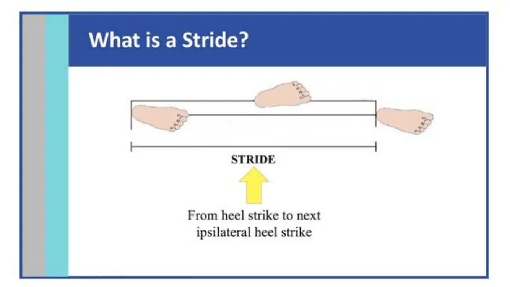
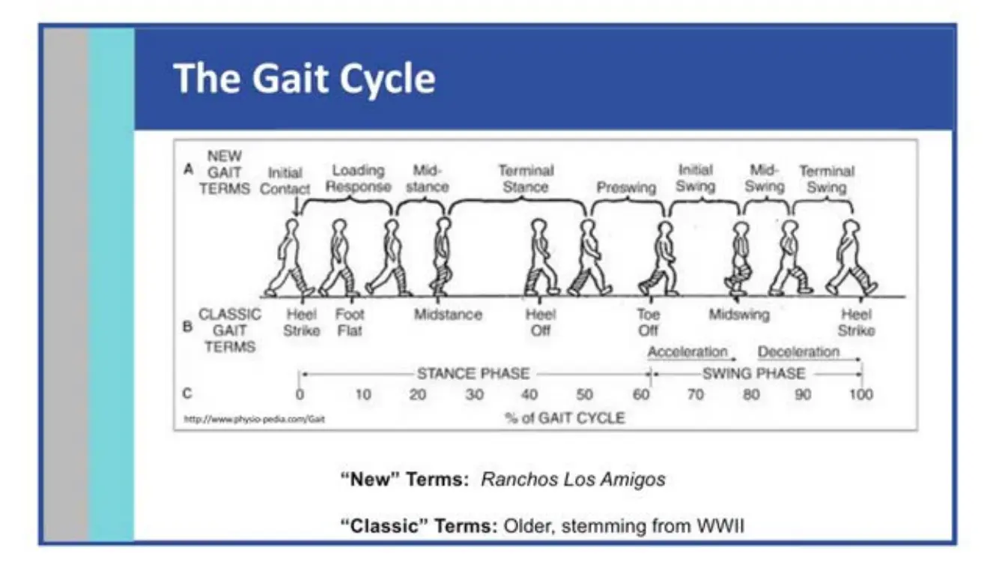
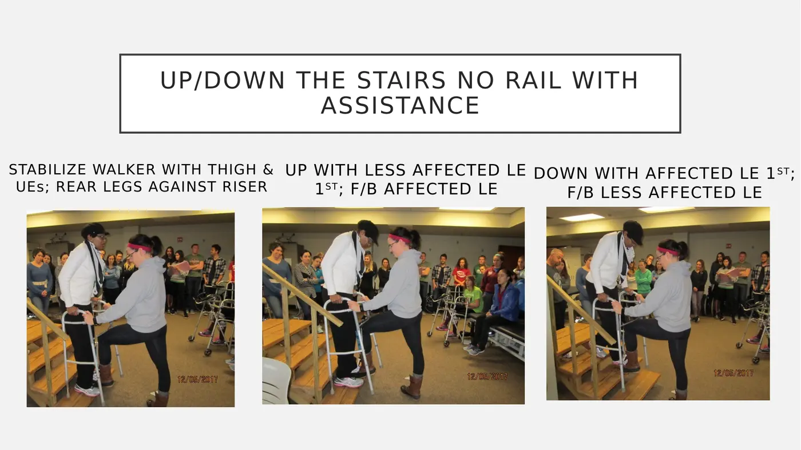
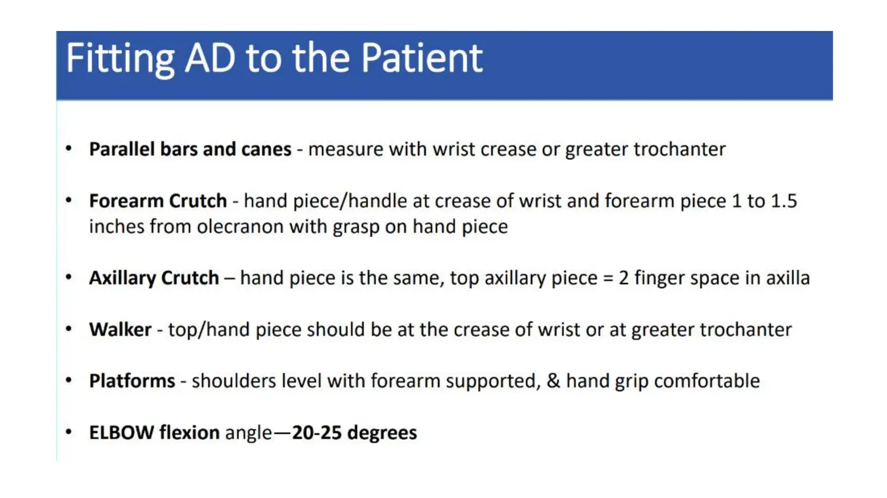
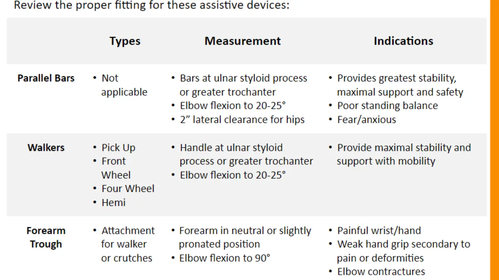
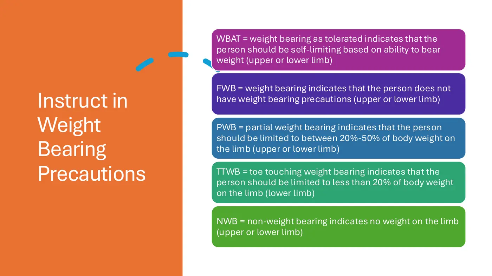
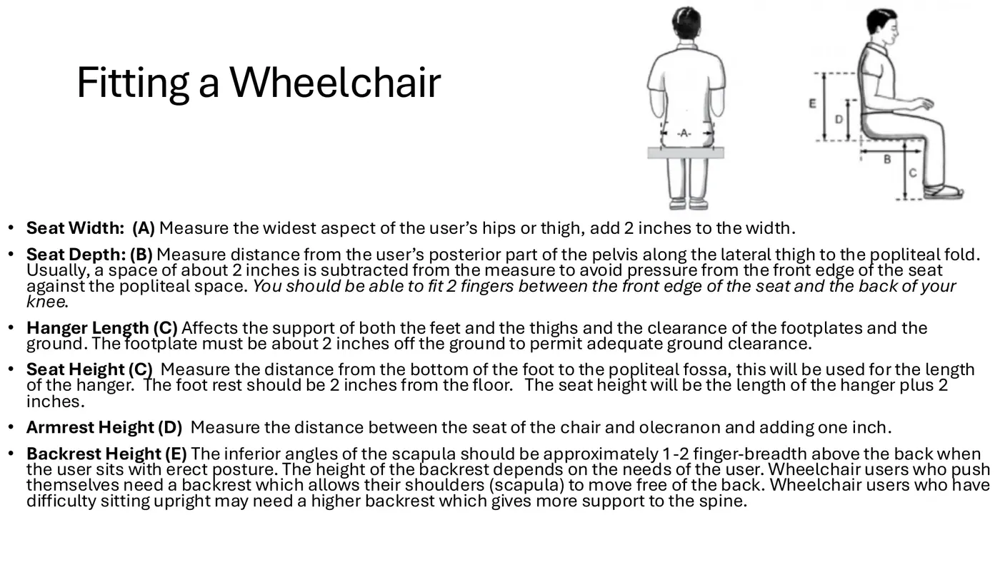
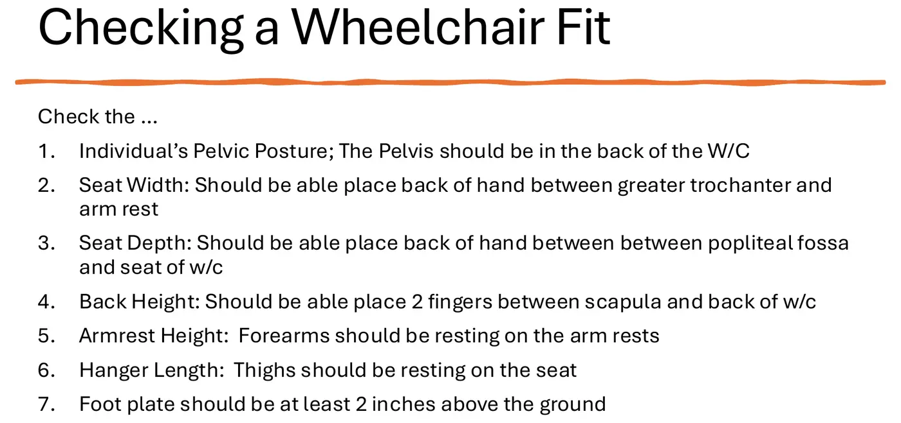
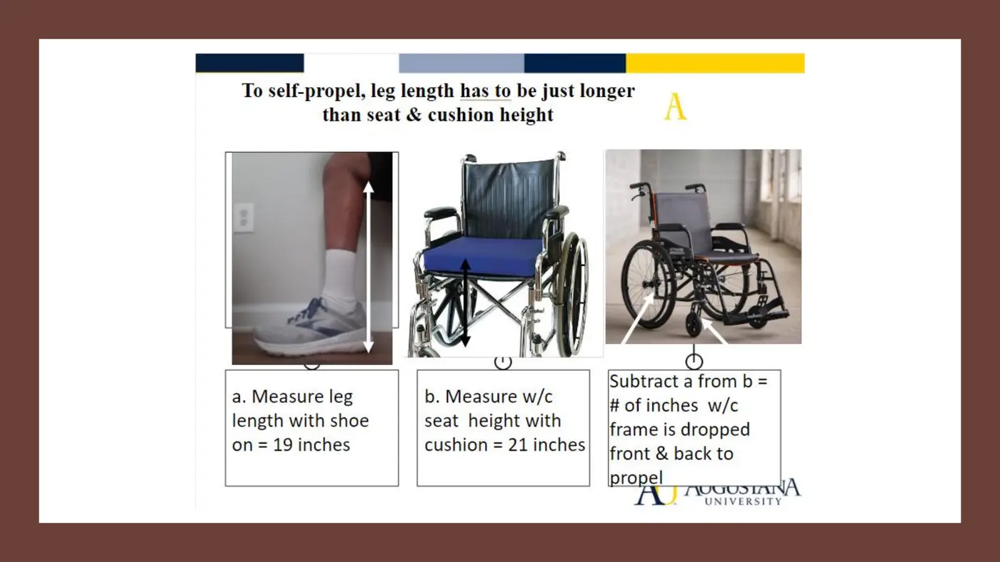

Physical Therapy Fundamentals · 6211
Module 3 — Movement Analysis: Draping, Bed Mobility, Transfers
Titled to match Canvas. What the module actually delivers: 3.1 Movement Analysis (Gait) • 3.2 Assistive Devices • 3.3 Wheelchair Management and Training
📖 How to Use These Notes
- Best used with the lecture playing — keep these open, follow along, and add your own notes as you watch
- Lecture banners mark the start of each topic and run in the same order as the videos
- 🎙 Callouts = direct insights from the instructor's transcript
- ★ Tips = exam-relevant content or things the instructor told you to prepare
- Figures are taken directly from the module's slide decks
- Each topic ends with its own Quick-Reference Glossary
- Written from last year's recordings — if a lecture has been re-recorded or resequenced, Canvas wins
- Watch the lecture videos (Mark Shepherd; sync with Dr. Jason Bartley) in your own Canvas module
- PhysioU carries this module's fitting, gait-pattern, and wheelchair videos — plus the Assistive Device Adjustment microlearning ASSIGNMENT
- Keep Fairchild Ch 9 (pp. 204–247) and Ch 7 (pp. 131–166) open beside these notes — the lectures point at its figures constantly
TOPIC 3.1
Gait and Gait Training
1. The Language of Gait
| Term | Definition | Numbers to know |
|---|---|---|
| Step (length) | Heel strike of one foot → heel strike of the opposite foot | — |
| Stride | Heel strike → the same heel strikes again | ~1 second, typically |
| Cadence | Steps per unit time | ~110/min men, ~116/min women; ~180/min = jogging threshold |
| Speed | Rate of linear forward motion (NOT the same as cadence) | Increased by longer stride and/or faster cadence |
| Step width | Distance between heel midpoints — the walking base | Mean ~3.5 in (1–5 in); wider in balance-impaired elders and toddlers — document it |


- Use the Rancho Los Amigos (“new”) terms — clinic, boards, and the rest of the curriculum all do. Stance ≈ 60–62%: initial contact → loading response → midstance → terminal stance. Swing ≈ 38–40%: preswing → initial swing → midswing → terminal swing.
| Phase | One-line definition (sync summary sheet) |
|---|---|
| Initial contact | Foot drops to floor → onset of weight transfer |
| Loading response | Weight rapidly transfers onto the outstretched limb, heel → foot flat |
| Midstance | Body progresses over a single stable limb until weight aligns over the forefoot |
| Terminal stance | Body moves ahead of the stance limb; heel begins to rise |
| Preswing | The forward “push” that readies the limb for swing |
| Initial swing | Thigh advances as the foot lifts |
| Midswing | Thigh keeps advancing; knee begins extending; foot clears ground |
| Terminal swing | Lower leg and foot move ahead of the thigh via knee extension — advancement complete |
- Functional tasks framing: weight acceptance (forward progression + limb stability + shock absorption), single-limb support, swing-limb advancement (foot clearance + positioning for the next stance).
2. Guarding
- Gait training is more than walking: turning, sidestepping, backward steps, curbs, ramps, stairs, doors, elevators, crowded rooms, tight hallways. Guarding = the protective act that keeps the patient safe through all of it.
🛡 Guarding rules (Shepherd)
- Stand at the side — or behind — the affected/weakest side. Front-guarding on level ground is NOT optimal (one exception below)
- Gait belt every time. NEVER clothing or waistbands — a belt strap that breaks is a fall
- Wide base of support, slight squat, arms wide; use the patient's shoulders as points of control
- Expect the unexpected. Never leave a patient standing unattended
- Caregivers stand aside and watch first — you control the environment
- Preparation checklist: patient alert/oriented and medically appropriate (chart review: orders, labs, vitals, WB status)? Assistance needed (tech, PTA, OT, nurse)? Equipment + gait pattern chosen? Attire safe (nonskid socks — never barefoot in the hospital; beware sandals/heels)? Pathway cleared (hospital clutter, gym equipment, parallel bars)? AD measurements verified (Fairchild p. 222)? Belt on, explain AND demonstrate, review WB restrictions with the chart AND the patient. Monitor HR, BP, RPE as they go; protect IV lines and telemetry.
3. The Gait Patterns
| Pattern | Devices | How it moves | Trade-offs |
|---|---|---|---|
| 4-point | Bilateral ADs | One AD → opposite LE → other AD → its opposite LE (alternating reciprocal) | Slowest, most stable — three points always down; safest in crowds |
| 2-point | Bilateral ADs | AD + opposite LE together, then the other pair (simultaneous reciprocal) | Stable AND faster; needs coordination; low energy; resembles normal gait |
| 3-point | Bilateral ADs or walker — not canes | ADs + involved leg advance, then the sound leg steps to/through | For NWB on one LE (think crutches); rapid but high energy — needs strong UEs, trunk, stance leg |
| 3-1 (three-one) | Bilateral ADs or walker | ADs advance WITH the PWB limb, then the FWB limb advances | FWB one side + PWB the other; more stable and less energy than 3-point, but slower |
| Modified 4-point | One AD, held opposite the protected LE | AD and affected LE advance alternately | One functional UE; wider base shifts COG off the protected limb |
| Modified 2-point | One AD, opposite side | AD + affected LE advance simultaneously | Faster one-device option |
| Swing-to / swing-through | Two crutches (or walker for swing-to) | Both crutches forward → legs swing to them / beyond them | Bilateral LE involvement + trunk instability (paraplegia, spina bifida); swing-through is faster but less safe |
4. When Balance Goes
| Loss of balance | Your response |
|---|---|
| Forward | Pull back on the gait belt; other hand pulls the trunk up and back; press your hips forward against their pelvis. Can't recover? Lower them to the floor — never ride the fall down |
| Backward | Push forward on pelvis and trunk; support with your body |
| Toward you | Face their side, widen your stance, catch with your body — falling into you is the SAFEST direction (which is why you guard the weak side) |
| Away from you | Pull the belt; other hand at the shoulder or chest to realign them over their base |
5. Stairs
- “Up with the good, down with the bad.” Ascend: unaffected leg first, then affected leg + device — guard from BEHIND on the weak side. Descend: device first, then affected leg, then the unaffected leg lowers — guard from IN FRONT on the weak side, the one exception to the no-front rule; one foot about two steps down, wide base (Fairchild pp. 244–247; crutch falls pp. 260–261; doors and IV poles p. 256).

- Standard walker on stairs (Dr. Brown): no rail — stabilize the walker with thigh + both hands, rear legs against the riser; up = less-affected leg first; down = affected leg first. With a rail: walker turned to the side, helper supports it, always turn toward the rail, walker flat on the landing when feet reach the last step.
📺 Required watching — Topic 3.1
Required reading: Fairchild 6e, Ch 9 — Assistive Devices, Patterns, and Activities, pp. 204–247.
Topic 3.1 — Quick-Reference Glossary
| Term | Definition |
|---|---|
| Step vs stride | Contralateral vs ipsilateral heel-strike-to-heel-strike |
| Cadence norms | ~110 men / ~116 women / ~180 = running threshold |
| Stance : swing | ≈60–62% : 38–40% of the cycle (RLA terms) |
| Guard position | Side/behind the weak side — front only when descending stairs |
| 4-pt / 2-pt / 3-pt / 3-1 | Alternating · simultaneous reciprocal · NWB step-to · FWB+PWB |
| Swing-to / swing-through | Legs to the crutches / past them |
| Forward LOB rule | Belt back, trunk up, hips in — or lower to the floor |
| Up with the good, down with the bad | The stairs sequencing mnemonic |
TOPIC 3.2
Assistive Devices
- ADs protect healing structures and restore activity-level function — but they can also become a crutch in the bad sense: wean patients off when ROM, strength, and pain allow. Selection weighs diagnosis/prognosis, prior level of function, history, cognition, pain, UE involvement, environment, balance/coordination, and WB status.
| Device family | Members | When |
|---|---|---|
| Walkers | Standard/pick-up · front-wheeled · rollator (seat + basket) · hemi-walker | Max stability (standard, slowest) → adequate stability with easier movement (FWW) → most mobility (rollator) → one-sided use in hemiplegia (hemi) |
| Canes | Single-point · narrow/wide-based quad | Balance assist; NOT for weight-bearing limitations |
| Crutches | Axillary · Lofstrand (forearm) | WB restrictions with good UE strength + coordination |
| Forearm trough | Attachment for walker or crutches | Painful wrist/hand, weak grip, elbow contractures — forearm neutral, elbow ~90° |



📱 Required PhysioU — fitting series (Topic 3.2)
Topic 3.2 — Quick-Reference Glossary
| Term | Definition |
|---|---|
| 20–25° elbow flexion | The near-universal AD fit criterion |
| Rollator | Wheeled walker with seat + basket — most mobility, least support |
| Hemi-walker | One-sided walker for hemiplegia |
| Forearm trough | The wrist-sparing attachment (elbow ~90°) |
| WBAT / FWB / PWB / TTWB / NWB | Tolerance-limited / full / 20–50% / <20% toe-touch / none |
| Wean rule | The AD comes OFF when ROM, strength, and pain allow |
TOPIC 3.3
Wheelchair Management and Training
- A wheelchair that fits poorly costs function, comfort, stability, safety, and skin. Fit assessment first; skills training second.


| Check | Standard |
|---|---|
| Pelvis | All the way back in the chair |
| Seat width | Back of hand fits between greater trochanter and armrest (measure: widest point + 2 in) |
| Seat depth | 2–3 fingers between the popliteal fossa and seat edge (posterior pelvis → popliteal fold, minus ~2 in) |
| Back height | 2 fingers between scapula and chair back (~1–2 finger-breadths below the scapula; higher = support, lower = UE freedom) |
| Armrest height | Forearms rest naturally (olecranon + ~1 in) |
| Hanger/footplate | Thighs resting on the seat; footplate ≥2 in above the ground |

- Self-propel rule: leg length (with shoe) must be just longer than seat + cushion height — subtract to find how far the frame drops front and back (example: 19 in leg vs 21 in seat → 2 in drop). Propulsion variants: two arms, two legs, or one arm + one leg (hemi pattern).
- Mobility skills (all on PhysioU): curbs up (backward or forward) and down (forward), ramps up/down, doors that open away vs toward you. Before transfers: lock the wheels and swing the casters anterior for a longer, more stable base.
🛟 Pressure relief — the numbers that matter
- Tilt 25–65° relieves pressure; 15° or less does NOT. Tilt + recline combined give the most relief; elevating leg rests help the recline
- Independent techniques: push-up · side-to-side lean (lock wheels, swing the armrest away) · forward lean
- The full UW Spinal Cord Injury handout is in this course's readings folder in this Drive
📱 Required PhysioU + reading — Topic 3.3
- Wheelchair: factors to consider
- Wheelchair: patient education
- Fitting: seat width · depth · height · back · armrest (series — start here)
- Propulsion: two UEs / two LEs / one UE + one LE (series)
- Mobility: curbs, ramps, doors (series)
- Pressure relief: push-up / side-to-side / forward lean (series)
- Dependent pressure relief (UW SCI pamphlet)
Required reading: Fairchild 6e, Ch 7 — Features and Activities of Wheelchairs, pp. 131–166.
Topic 3.3 — Quick-Reference Glossary
| Term | Definition |
|---|---|
| Fit six | Pelvis back · seat width · seat depth · back height · armrest height · footplate ≥2 in |
| Popliteal-fossa check | 2–3 fingers of clearance at the seat's front edge |
| Frame drop | Leg length minus seat+cushion height, applied front and back |
| Hemi propulsion | One arm + one leg — the stroke pattern |
| Tilt threshold | 25–65° works; ≤15° doesn't |
| Caster-forward rule | Swing casters anterior + lock wheels before every transfer |
SYNC SESSION
Devices, Patterns, and Fit — Applied
Dr. Bartley's sync runs the whole module hands-on: device fitting on each other, weight-bearing precautions, sit↔stand transitions (the cues: “slouch → scoot to the edge,” feet underneath you, “lean back — think pregnant! — then lean forward”), guarding with devices, and case-based pattern selection. Expect quiz-style reasoning in BOTH directions: given a patient, pick the pattern — and given a pattern, describe the patient and give the verbal instructions.
| Sample sync case | Answer logic |
|---|---|
| NWB left LE after surgery — which pattern? | 3-point (bilateral ADs/walker; the NWB limb never bears weight) |
| FWB one LE, PWB the other | 3-1 — ADs move with the PWB limb |
| One functional arm only | Modified 4-point or modified 2-point, device opposite the protected leg |
| Bilateral LE involvement + trunk instability | Swing-to (or swing-through if faster matters more than safer) |